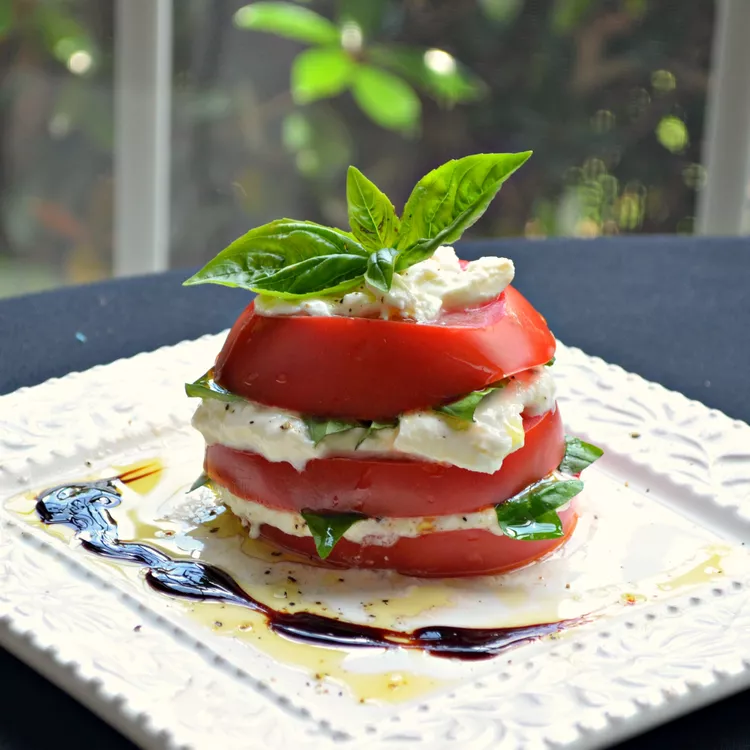

Burrata

Description:
All you need to know about this tomato and Burrata salad is that burrata means “buttered.” Comparing mozzarella and Burrata is slightly unfair, as Burrata is significantly richer and creamier. It's not like comparing apples and oranges — it's more like apples and supermodels
Ingrediant
- 1 vine-ripened tomato, cored and cut into 1/2-inch slices
- flaked sea salt and freshly ground black pepper to taste
- ¼ cup Burrata cheese, or more to taste
- 1 tablespoon torn fresh basil leaves, or to taster
- 1 tablespoon extra-virgin olive oil
Etape:
- Place a tomato slice onto a plate and season with sea salt and black pepper. Spread Burrata cheese over tomato slice, top with torn basil leaves, and drizzle with olive oil. Repeat the layering process with remaining ingredients, finishing with a tomato slice.